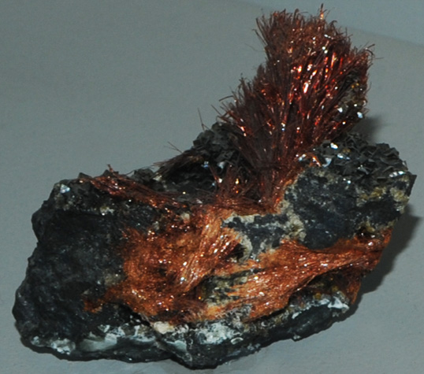

|

| (Fe,Pb)As2O6
This sample of ludlockite is displayed in the Smithsonian Museum of Natural History. Ludlockite contains iron, lead and arsenic with the composition (Fe,Pb)As2O6. This sample is about 4 x 8 cm and is from Tsumeb, Namibia. It is described as ludlockite with smithsonite. Bright orange is the typical color for ludlockite.
|